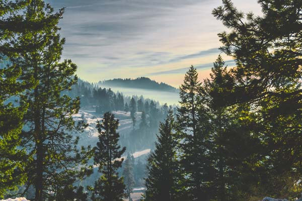

Bogus Basin Mountain Recreation Area is a ski area in Boise County, Idaho, sixteen road miles north-northeast of the city of Boise. Bogus is operated by the Bogus Basin Recreation Association, a non-profit organization, on private and leased land in the Boise National Forest. Ski season generally runs from Thanksgiving weekend until the weekend preceding April 15, depending on snow conditions. The area also has cross-country skiing on 23 miles of Nordic trails. The area probably got its name during the 19th-century gold rush. Crooks in the hills above Boise City, known as "spelterers", would make bogus gold dust by heating lead filings with a bit of real gold dust.
Population: N/A
Bogus Basin Mountain Recreation Area is a ski area in Boise County, Idaho, sixteen road miles north-northeast of the city of Boise. Bogus is operated by the Bogus Basin Recreation Association, a non-profit organization, on private and leased land in the Boise National Forest. Ski season generally runs from Thanksgiving weekend until the weekend preceding April 15, depending on snow conditions. The area also has cross-country skiing on 23 miles of Nordic trails. The area probably got its name during the 19th-century gold rush. Crooks in the hills above Boise City, known as "spelterers", would make bogus gold dust by heating lead filings with a bit of real gold dust.

Population: N/A
The Sawtooth Range is a mountain range of the Rocky Mountains in central Idaho, United States, reaching a maximum elevation of 10,751 feet at the summit of Thompson Peak. It encompasses an area of 678 square miles spanning parts of Custer, Boise, Blaine, and Elmore counties, and is bordered to the east by the Sawtooth Valley. Much of the mountain range is within the Sawtooth Wilderness, part of the Sawtooth National Recreation Area and Sawtooth National Forest. The mountains were named for their jagged peaks

Population: 922
Challis is the largest city in Custer County, Idaho, United States. It is the county seat and its population was 1,081 at the 2010 census. The 2020 census shows 902 residents, a 16.6% drop. Challis was founded in 1878 and named for A.P. Challis, who was a surveyor when the townsite was laid out. Challis post office was established in 1878. Twin Peaks Sports, the I.O.O.F. Hall, and a number of other buildings in Challis are individually listed on the National Register of Historic Places, most as a result of an Idaho State Historical Society study of historical resources in the town.

Population: 122
Stanley is a town in the Sawtooth Valley in Custer County, Idaho, United States. The population was 116 at the 2020 census; up from 63 in 2010. The center of population of Idaho in 2000 was located in Stanley. Fur trappers of the Hudson's Bay Company discovered the Stanley Basin in the 1820s, but it was mostly avoided due to scarcity of beaver. Captain John Stanley, a Confederate Civil War veteran, led a party of twenty-three prospectors through the area in 1863, but they found little gold and moved on and discovered the Atlanta lode on the south end of the Sawtooths. The site was not considered a town until 1919 when its streets and lots were surveyed and recorded.

Population: N/A
The Boise National Forest’s vast landscape spans over 2.5 million acres of diverse forest and grassland. Located northeast of Idaho’s capital city of Boise, recreationists can explore the North Fork Payette River Canyon at 2,800 feet in elevation to the nearly 10,000 foot peak of Trinity Mountain. Whether you choose to explore any of more than 500 trails, or cool off in one of over 250 lakes and reservoirs, the Boise National Forest is truly an outdoor enthusiast’s dream! Boise is the capital and most populous city of the U.S. state of Idaho and is the county seat of Ada County. On the Boise River in southwestern Idaho, it is 41 miles east of the Oregon border and 110 miles north of the Nevada border. The downtown area's elevation is 2,704 feet above sea level. The population according to the 2020 US Census was 235,684.